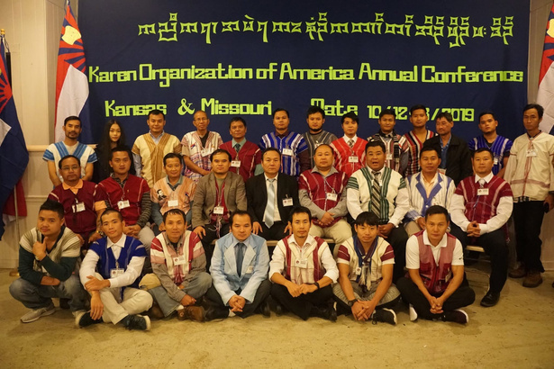
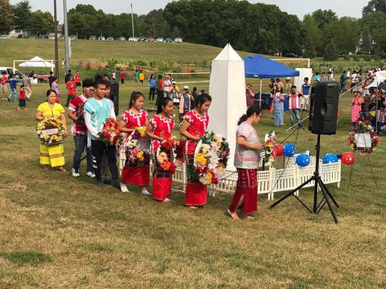

01 · Who we are
United by purpose.
KOA was officially founded on August 8, 2018, in Omaha, Nebraska.
More than fifty leaders
Representatives from twenty states formed one national body.

01 · Who we are
KOA was officially founded on August 8, 2018, in Omaha, Nebraska.
Representatives from twenty states formed one national body.

02 · Vision
KOA envisions empowered Karen communities in the United States advocating for justice in Burma.
Unity is a practice: staying connected while honoring the knowledge each community carries.
03 · Mission
KOA strengthens rights, well-being, educational success, and relationships between Karen communities.
Public advocacy and community solidarity reinforce one another.

04 · What endures
Culture, language, relationships, and public presence keep community knowledge moving.
KOA connects historical purpose to the work communities need now.
History of KOA
The founding timeline is concrete and short: leaders began a new collaboration, gathered nationally, then formalized a shared organization.
In 2018, KOUSA and KAO leaders discussed working collaboratively and strengthening unity.
More than fifty leaders from twenty states met in Omaha, Nebraska.
The organizations joined to form the Karen Organization of America.
Vision and mission
United and empowered in the U.S., advocating for justice in Burma.
01Advocate, educate, strengthen unity, and stand in solidarity.
02Explore how the mission becomes programs.
↗National coalition
The supplied organization material names eleven community organizations. Current relationships, names, and links should be reconfirmed before they are treated as a formal directory.
ကညီကျိာ်
The interface can display verified S’gaw Karen identifiers, but it does not claim to translate the full site. Publication needs a fluent reviewer, source tracking, and approval.
A reviewed community identifier used in the project foundation.
A reviewed language label—not an automated translation promise.
Connect with KOA about language review and publication.
↗Dictionary preview
This unfinished review tool contains only identifiers already checked in the project. Future entries need a source, reviewer, dialect, and approval date.
Local preview: nothing typed here is sent anywhere.
A reviewed community identifier used in the project foundation.
A reviewed language label used in the project foundation.
Future entries require a source, fluent reviewer, dialect note, and approval date.